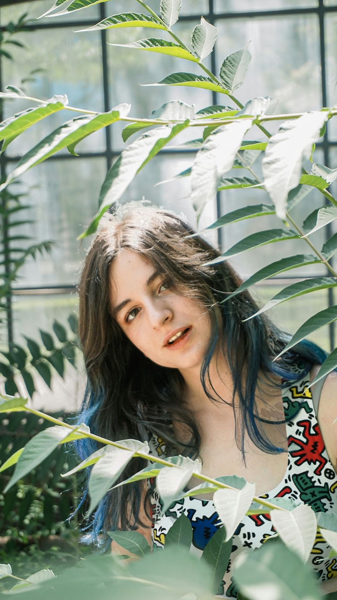
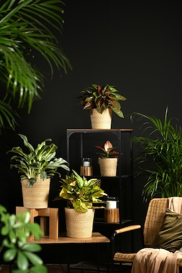

Clara, Co-founder & Head Stylist
Clara has been growing things since she was five. She leads our interior styling projects and has a particular weakness for oversized fiddle-leaf figs.
Verdana & Co. was founded in 2019 by two friends with a shared obsession: plants, ceramics, and the belief that everyone deserves a little greenery in their life. What started as a stall at a local market in East London has grown into a full botanical studio with a shop, a workshop programme, and an interior styling service.
We source our plants from small, sustainable growers across the UK and Europe. Every variety we stock has been chosen for its beauty, resilience, and suitability for indoor life. We don't believe in throwaway plants — we believe in the right plant for the right person.
We are proud to be part of London's growing community of independent makers and growers. Our studio in East London is open most of the week — come in to browse, ask questions, or just be around plants for a while. No pressure, no hard sell. Just good plants and people who love them.


Clara has been growing things since she was five. She leads our interior styling projects and has a particular weakness for oversized fiddle-leaf figs.
Margot trained as a horticulturist before pivoting to the world of indoor plants. She runs all our workshops and writes our plant care guides.
Yusuf keeps the shop running and knows the name of every plant in stock. Ask him anything — he loves it.